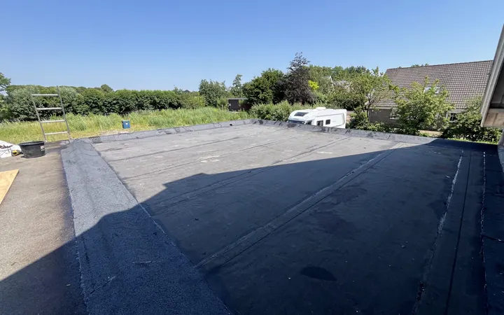
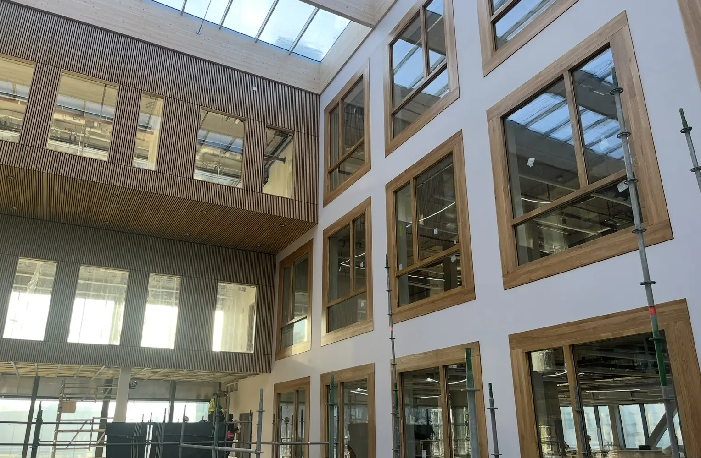
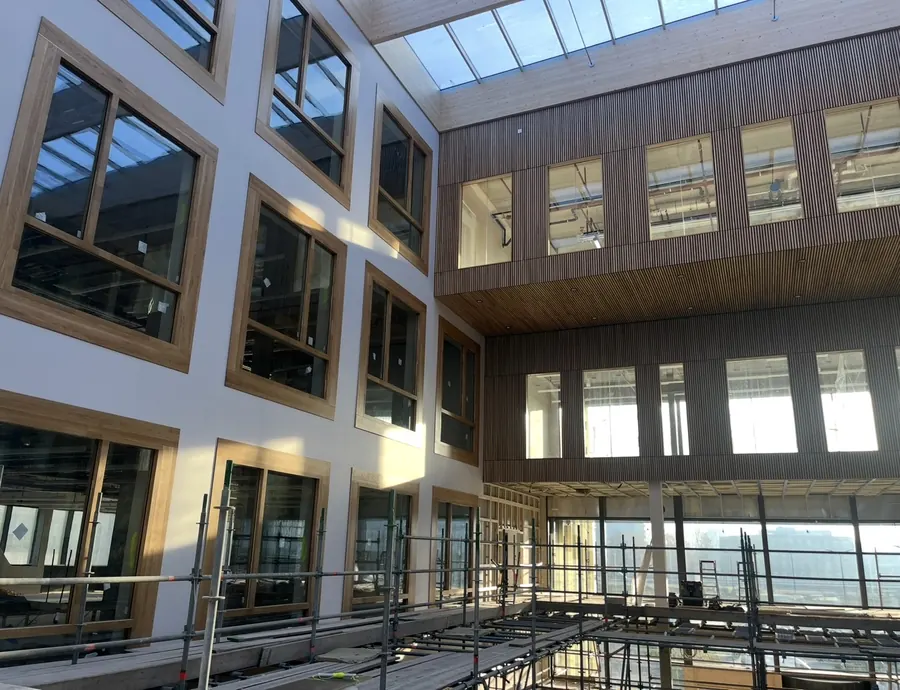
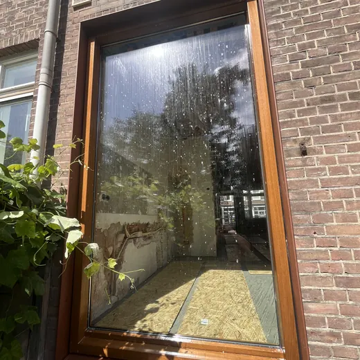
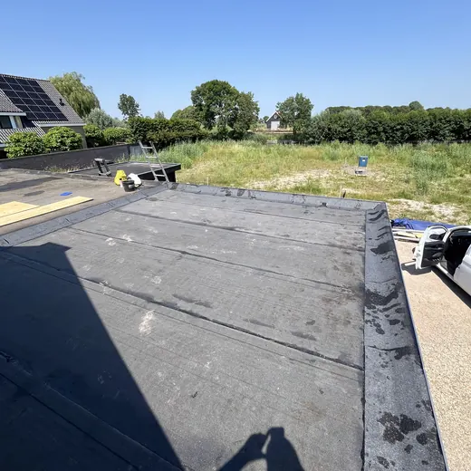
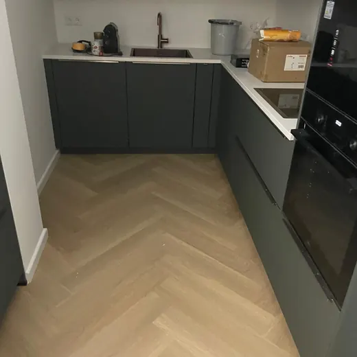
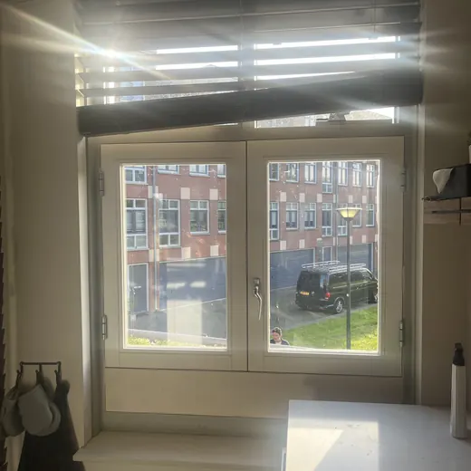
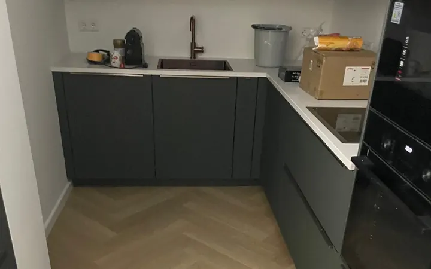

Dak en buitenkant
Dakwerken en daklekkage, schilderwerk binnen en buiten, kozijnen en timmerwerk.

Dak · Schilderwerk · Kozijnen en timmerwerk · Loodgieter en cv · Renovatie en verbouw
Van één nieuw kozijn tot een atrium vol ramen: Westbouw is niet te klein voor het grote werk. Dak, schilderwerk, timmerwerk en cv onder één dak.
Liever bellen? 06 41 51 23 90, ma t/m vr 9.00 tot 16.00 uur.
Foto's die Westbouw zelf op Google zette, van 2021 tot deze maand.





6 Google-reviews, allemaal 5 sterren
ervaring als familiebedrijf
dak, schilder, timmer, cv en verbouw
garantie op binnenschilderwerk, 3 jaar buiten
Zes vakken in twee groepen.

Dakwerken en daklekkage, schilderwerk binnen en buiten, kozijnen en timmerwerk.

Renovatie en onderhoud, nieuwbouw en verbouw zoals een dakkapel, en loodgieter en cv.
“Ik moest m’n dak kapel met spoed laten vervangen na n grote lekkage
T was binnen 2 dagen gemaakt en t ziet er top uit
Ook was de communicatie met klant en werknemer zeer goed en ben blij met m’n nieuwe dak kapel
T ziet er top uit
Hardstike bedank”
“Na de storm , waren er veel pannen afgewaaid!
Kwamen ze zelfs op zaterdag eind vd middag nog langs om te repareren
Netjes gewerkt echt bilij mee”
Of een kozijn, een kamer of een cv-ketel. Westbouw maakt er een gratis prijsopgave voor.